The founder of Raspberry Pie is EbenUpton,and the development organization is the
Raspberry Pie Foundation.
This device was released in 2012 and uses Linux system.It is a
small,low-cost microcontroller computer development
board with a memory capacity ranging from 256 MB to 8 GB.It is designed as a small computer the size of a credit card,
aimed at supporting computer programming education.Raspberry pie has a wide range
of uses,ranging from learning to
write computer programs in Python to tracking aircraft
routes.Raspberry pie is also an ideal tool for learning programming
and hardware,supporting multiple programming languages includingC, C++, Python, Rust, Go, andJavascript.It can also be
used in conjunction with various interesting external devices,such as 3D printers,cameras,and ADS-B receivers.
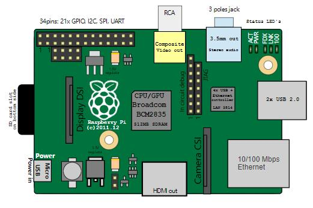
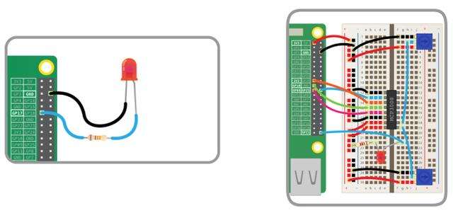
Schematic diagram of Raspberry Pie
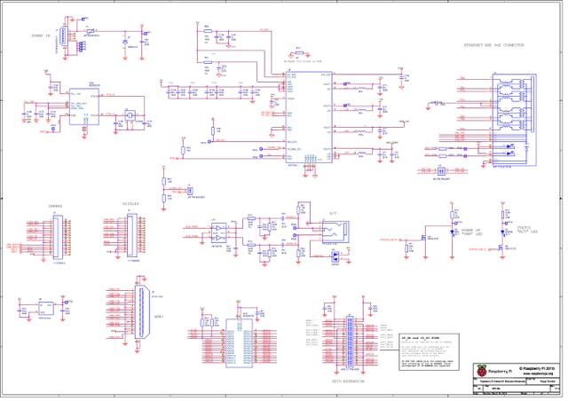
1.Education
The Raspberry Pie Foundation has take nmeasures to accumulate software developers
and teachers.The foundation also started with its teacher training organization to
train teachers in a more precise way.Intended to update teachers through modern
curriculum.
2.Home automation
Home automation is basically a smart home controlled by automation systems.Can
control security cameras,vault security systems,climate in different rooms,power
supply,and all house hold appliances present in the home(refrigerator,washing
machine,microwave,etc.).
3.Industrial automation
In2014,Mod Berry was issued by TECHBASE(a well-known automation
manufacturerinPoland).This is a computer used for industrial purposes,built using
a Raspberry computing model.This device also has some other advantages,such as
theRS-485/232serialport,1-wirebus,etc. The computer quickly became popular
after being launched on the market.
Raspberry pie also offer sdifferent products with excellent usability. Raspberry Pie
camera o rOTTO camera is a digital camera manufactured by Next Thing Co.,which
has a Raspberry Pie computing module that can efficiently and ideally run the camera.
4.Artificial Intelligence Assistant
Raspberry Pie has partnered with Google to propose a hardware suite that will use
Google's cloud voice API and assistant software development suite to interpret
natural language or speech.
5.Photography
Raspberry pie can help capture long-lasting photos of many photographers.Raspberry
pie No IR cameras can be used as artificial intelligence cameras.
6.Programming
Raspberry Pie can learn programming,and those who are already capable of
programming can use Pie to learn electronic products for physical projects.
Arduino IDE
The Arduino Integrated Development Environment(IDE)is the primary text editing
program used for programming Arduino.Before uploading the code to the circuit
board you want to program,you can input the code into it.The Arduino code is
called a sketch.
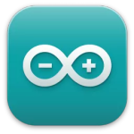
There are 5 submenus on the menu bar,and a series of buttons below are available
for you to verify and upload sketches.The IDE translates and compiles your sketch
into code that Arduino can understand.Once the Arduino code is compiled,it will be
uploaded to the memory of the circuit board.
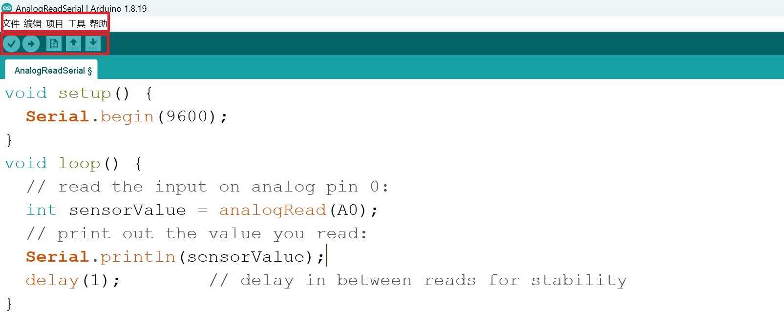
If there are any errors in the Arduino code,a warning message will be marked to
prompt the user to make changes.
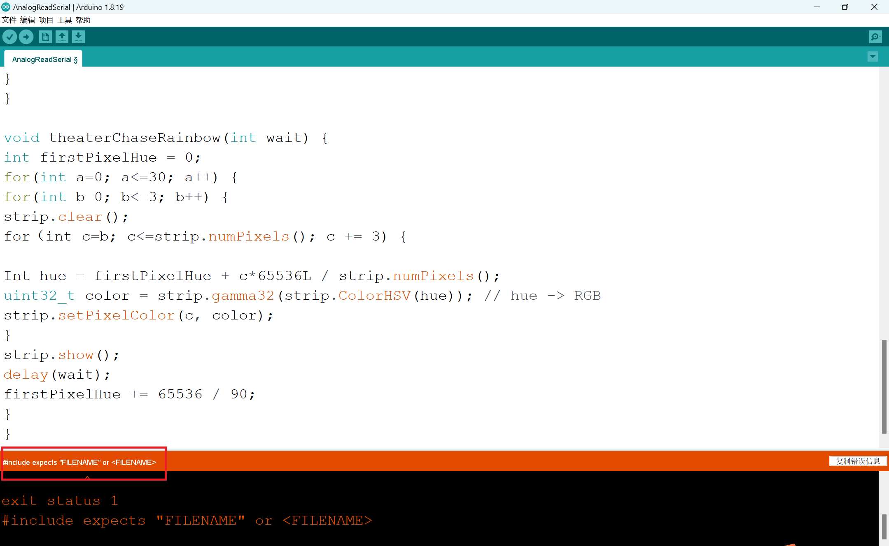
Serial monitor and serial plotter
You can open the Arduino Serial Monitor by clicking on the magnifying glass icon in
the upper right corner of the IDE or below the tools.Serial monitors are mainly used
to interact with computers and Arduino boards,and are a good tool for real-time
monitoring and debugging.
The Arduino Serial Plotter is another component of the Arduino IDE that allows you
to generate real-time graphics of serial data.Serial plotters make it easier for you to
analyze data through visual displays. You can create charts,negative value charts,
and perform waveform analysis.
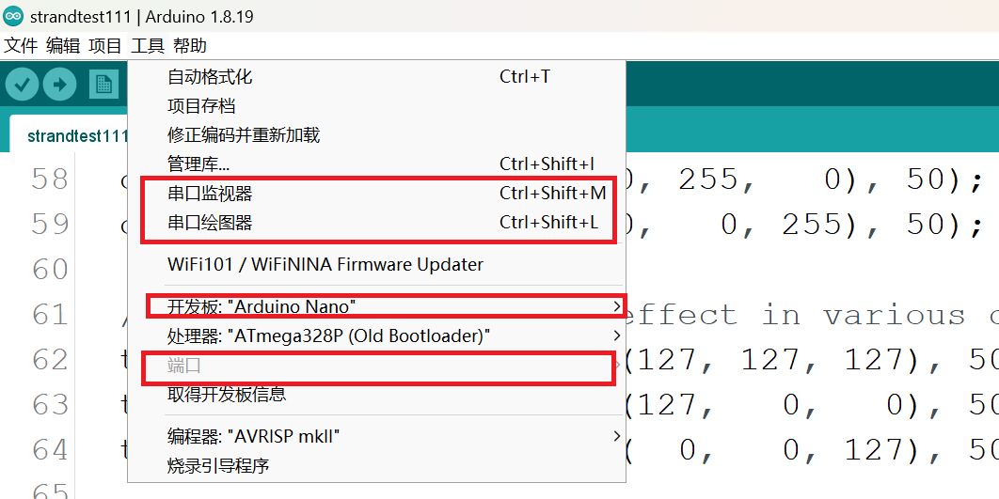
Arduino's Programming Language One
An Arduino script code(SKETCH)consists of two parts
Void setup()
Place a program to initialize the Arduino board vwithin the scope of this function-a
command to properly install the Arduino board before the main program begins
writing.
Void loop()
Place your Arduino scrip there.This part of the program will be executed repeatedly
until the Arduino board is closed.
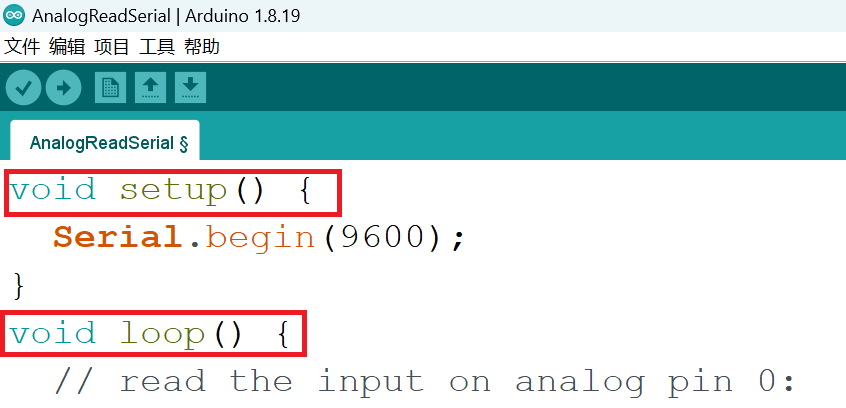
Run Water Light Program
Process
1. Open Arduino and click on "Manage Libraries" in "Tools".
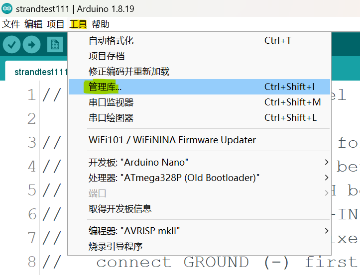
2. Enter "Adafruit NeoPixel" on the search page, locate it, and click "Install".
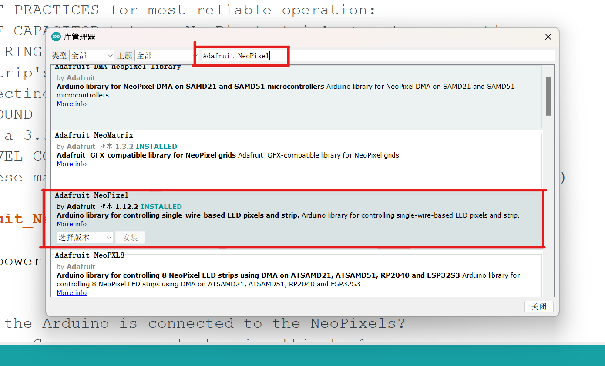
3. Click on "Load Library" in "Project", scroll down and find "Adafruit NeoPixel".
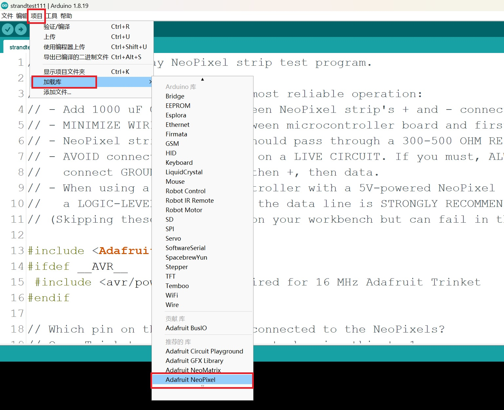
4. Click on "Examples" in "Files", scroll down, find "Adafruit NeoPixel", and click on "strandtest" inside.
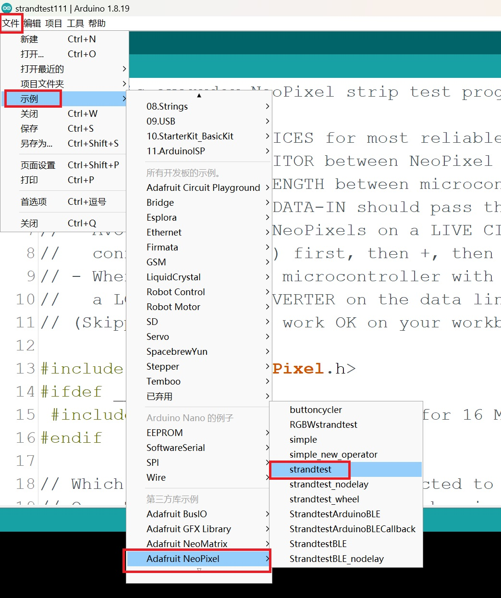
5. Find line 23 and change "60" to "8".
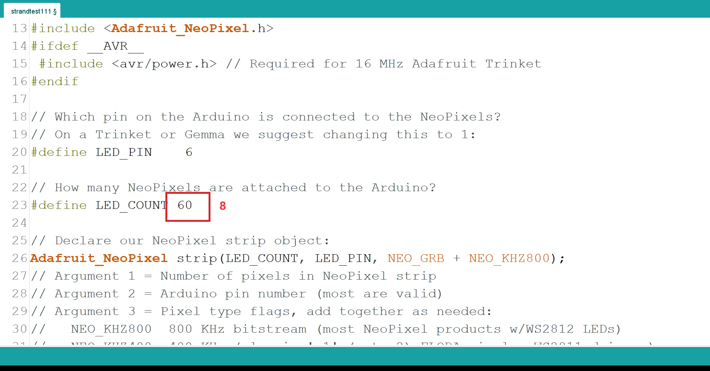
6. Insert the hardware, click "Upload", and check the status of the water lamp.
Show
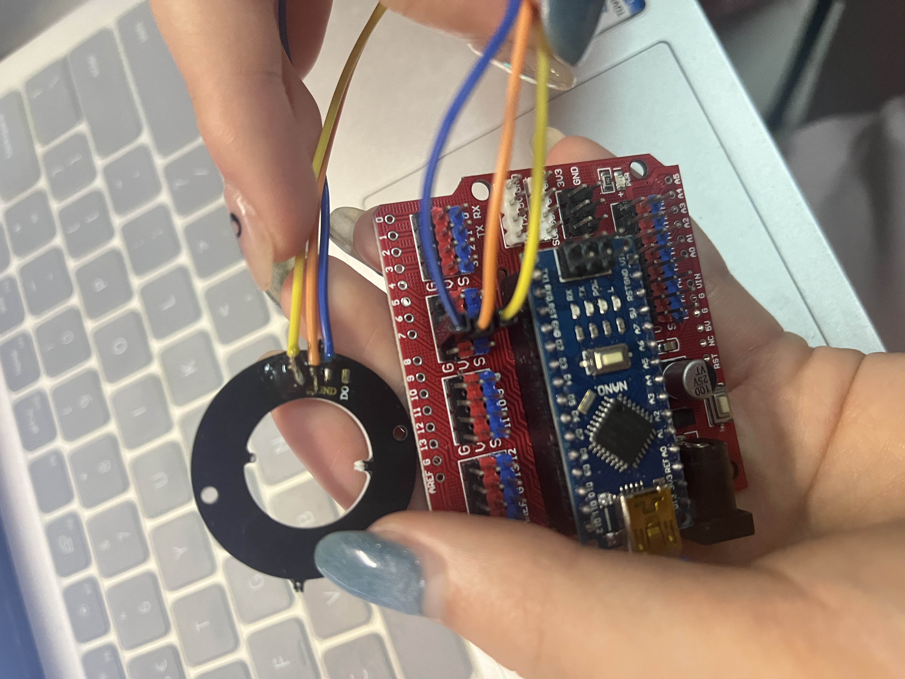
Case1:The Ocean Clean up
The Ocean Clean up is a non-profit organisation that works in two parts:
cleaning up Marine litter;Intercept river litter. The goal is to remove 90%
of floating Marine debrisby 2040.In the case of Marine debris,they used
computer models to locate areas where trash accumulates.Then,two
boats were used to set up a U-shaped barrier,using the difference in
current speed to collect garbage.Finally,the garbage is sent a shore
regularly for recycling.
In terms of river waste,they provide a variety of interceptors according to
the characteristics of different rivers.
Advantages:Creative,outstanding contribution to environmental
protection,important for the environmental protection of rivers and
oceans.Can clean up the garbage and protect the aquatic animals at the
same time.
Disadvantages:High construction costs,equipment damage in the sea is
difficult to recover,but also will increase pollution.
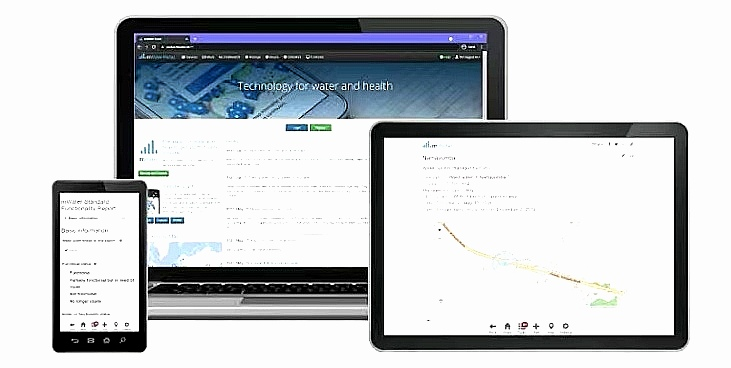
Case2:mWater
mWater is a water data platform that enables governments,utilities,water
management agencies andother customers to collect, analyze,and share
water-related data.
In 2010,adevastating 7.0 - magnitude earthquake devastated Haiti's
drinking water and sanitation systems,leading to a cholera outbreak.
mWater assisted the Haitian Government's Water and Sanitation
Department in establishing a geographic database of drinking water
sources and sanitation facilities.This has helped the Haitian government
rebuild water and sanitation infrastructure.
Advantages:real-time data monitoring and analysis,help crisis response,
data sharing,customizable advantages.
Disadvantages:There are data security problems and high initial
investment disadvantages.
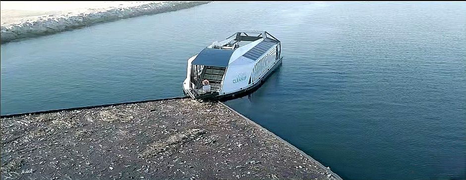
Case3:Wild life Insights
Wild life Insights is a wild life conservation program run by the World
Wildlife Fund.The project brings together wild life photos from more than
1,600 camera traps around the world,using AI models to automatically
identify animals in the images.The project shares data in an open,visual
form to engage researchers and the public in wildlife conservation.
Camera trap:Adevice that automatically takes photos or videos when it
senses animal activity.
Advantages:It has efficient data processing capacity,which can help the
research and protection of land animals.
Disadvantages:May cause ecological interference,technical update and
high maintenance costs.